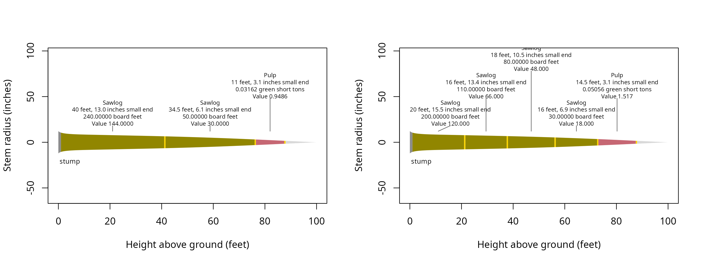

Bucking strategy selects logs by product priority or by their combined value. Compare the strategies when accepted lengths and prices offer competing cuts within the same stem. This calculation uses the Get started tree and its stored taper equation, with dimensions in inches and feet and illustrative prices in United States dollars.
What prices and dimensions compete?
The cascade offers each available section to products in the order
supplied to products(). It takes the longest feasible
sawlog at each step before assigning remaining eligible wood to pulp.
Prices value those selected logs without changing their priority.
Optimization compares combinations of eligible cuts within each
available segment.
## Attach the calculation and data tools
library(merchandiser)
library(dplyr)
## Accept sawlogs across the nominal length range
sawlog <- product(product = 'Sawlog', ## product label
min_length = 16, ## feet
max_length = 40, ## feet
min_sed = 6, ## inches
inside_bark = TRUE, ## limits measured inside bark
trim = 0.5, ## feet
volume_unit = 'scribner', ## board feet
price = 600, ## dollars
price_per = 1000) ## board feet
## Assign remaining eligible sections to pulp by green weight
pulp <- product(product = 'Pulp', ## product label
min_length = 8, ## feet
max_length = 20, ## feet
min_sed = 3, ## inches
inside_bark = TRUE, ## limits measured inside bark
trim = 0.5, ## feet
volume_unit = 'green_ton', ## green short tons
price = 30, ## dollars
price_per = 1) ## green short tons
## Set the cascade's product priority
specifications <- products(sawlog, pulp)
## Select logs in the supplied product order
cascade <- merchandise(tree_id = tree$tree_id,
dbh = tree$dbh,
ht = tree$ht,
spcd = tree$spcd,
products = specifications,
model = tree$model,
strategy = 'cascade')
## Select the combination with the greatest value
optimized <- merchandise(tree_id = tree$tree_id,
dbh = tree$dbh,
ht = tree$ht,
spcd = tree$spcd,
products = specifications,
model = tree$model,
strategy = 'optimize')Which strategy assigns the greater value?
Every product must have a finite positive price for optimization.
price_per puts that price on the product’s scale basis,
allowing board foot and weight products to contribute to one dollar
objective. The scale itself remains in each product’s own units.
## Compare dollar totals without combining unlike scale units
values <- bind_rows(cascade = cascade$logs,
optimized = optimized$logs,
.id = 'strategy') %>%
group_by(strategy) %>%
summarize(logs = n(),
board_feet = sum(scale[volume_unit == 'scribner']),
value = sum(value))| strategy | logs (count) | scale (Scribner board feet) | value (dollars) |
|---|---|---|---|
| cascade | 3 | 290 | 174.949 |
| optimized | 5 | 420 | 253.517 |
Cascade selects 3 logs totaling 290 Scribner board feet and about 175 dollars, while optimization selects 5 logs totaling 420 board feet and about 254 dollars. Log counts and dollar totals include pulp, while the board foot totals include only sawlogs.
Where did the cuts change?
Each candidate occupies nominal length plus trim, while scale uses the nominal body. Under the small end diameter rule, a shorter log carries a larger small end diameter on this tapering stem. The longest feasible log therefore need not produce the highest total scale. Here, shorter sawlogs increase the board foot total despite the additional trim allowances. The drawings retain the same colors for each product.

The cascade drawing starts with a 40-foot sawlog, while the optimized drawing starts with a 20-foot sawlog and contains 5 selected logs.
| strategy | log | product | start (feet) | end (feet) | nominal length (feet) | small-end diameter (inches) | scale (Scribner board feet) | scale (green short tons) | value (dollars) |
|---|---|---|---|---|---|---|---|---|---|
| cascade | 1 | Sawlog | 1.0 | 41.5 | 40.0 | 12.960 | 240 | NA | 144.000 |
| cascade | 2 | Sawlog | 41.5 | 76.5 | 34.5 | 6.055 | 50 | NA | 30.000 |
| cascade | 3 | Pulp | 76.5 | 88.0 | 11.0 | 3.073 | NA | 0.032 | 0.949 |
| optimized | 1 | Sawlog | 1.0 | 21.5 | 20.0 | 15.459 | 200 | NA | 120.000 |
| optimized | 2 | Sawlog | 21.5 | 38.0 | 16.0 | 13.441 | 110 | NA | 66.000 |
| optimized | 3 | Sawlog | 38.0 | 56.5 | 18.0 | 10.477 | 80 | NA | 48.000 |
| optimized | 4 | Sawlog | 56.5 | 73.0 | 16.0 | 6.910 | 30 | NA | 18.000 |
| optimized | 5 | Pulp | 73.0 | 88.0 | 14.5 | 3.073 | NA | 0.051 | 1.517 |
The first optimized sawlog has a physical small end diameter of 15.46 inches, compared with 12.96 inches for the first cascade sawlog.
How are equal values resolved?
The optimizer uses dynamic programming over reachable cut positions
and eligible nominal lengths on a 0.5-foot grid. As documented in
merchandise(), values within eight machine epsilons times
the larger absolute value are treated as ties. Among tied values it
favors fewer logs, then compares nominal lengths from the lower stem
upward, favoring the first longer log. Remaining ties favor the first
lower physical end in the same order. The final comparison uses byte
order of serialized start heights, physical ends, cut kinds, nominal
lengths, and product names along each path. These comparisons do not
round the returned dollar values.
What limits computation?
The state includes cut position and the counts of products with
max_logs limits. Cull and restriction boundaries divide the
available stem into segments and restart those counts. The algorithm
compares eligible continuations within that structure, rather than
moving defects or changing the supplied stem equation.
Without count limits, work grows with positions, products, and candidate lengths. Retaining the chosen paths also costs time and memory proportional to their log counts. Independently capped products multiply the possible states by their count combinations, making the worst case exponential in the number of capped products. Only reached states are stored.
Preparation rejects an off-grid cut-position expansion exceeding
50,000 cut positions, the limit documented in
merchandise(). Broad length ranges and several independent
log caps can therefore make a specification expensive even for a modest
tree list. Trees use the package’s parallel engine, but additional
threads do not reduce the number of candidate states required for a
tree.